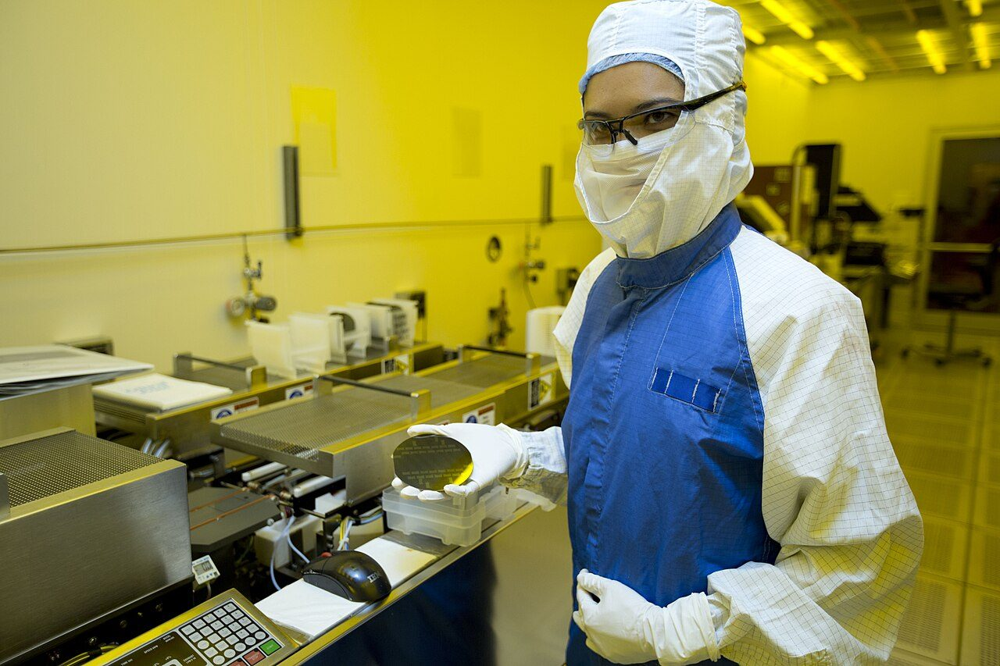

[한중수교 34년①] 대중 흑자가 4년 만에 돌아왔다, 그 절반이 반도체 하나다
2026년 1월 흑자 전환 뒤 5월까지 93억5800만달러, 2023~2025년 내리 적자였다
5월 대중 수출 189억달러 가운데 반도체가 98억8000만달러로 절반을 넘었다
6월에는 중국 19.6%, 미국 19.6%로 두 시장이 같은 자리에 섰다
1992년 8월 24일 한국과 중국이 수교했다. 34년이 됐다. 2026년의 대중 무역은 숫자로 보면 반등이고 구조로 보면 한쪽으로 쏠렸다. 3년 연속 적자를 끝낸 힘이 반도체 하나에서 나왔기 때문이다.

※ 이 연재는 2024년 인천투데이에 실린 「한중수교 32년」 연재를 잇는다. 주제는 이어받되 수치와 사실은 2026년 10월 기준으로 다시 확인해 새로 썼다.
1. 3년 적자를 끝낸 2026년
한국의 대중 무역수지는 2023년 181억달러, 2024년 69억달러, 2025년 112억달러 적자였다. 수교 뒤 30년 가까이 흑자를 내던 시장이 적자로 돌아섰던 기간이다.
2026년 1월 3억5000만달러 흑자로 방향이 바뀌었다. 5월에는 37억9000만달러 흑자를 냈다. 연초부터 5월 25일까지 누적 흑자는 93억5800만달러다.
수출도 늘었다. 2026년 5월 대중 수출은 189억달러로 전년 같은 달보다 80.9% 늘었다. 2025년 11월 증가로 돌아선 뒤 일곱 달 연속이다.
2. 그 흑자의 절반은 반도체다
흑자의 정체를 보면 한 품목이 보인다.
2026년 5월 대중 반도체 수출은 98억8000만달러다. 전년 같은 달보다 243.2% 늘었다. 같은 달 대중 수출 189억달러의 약 52%다. 중국으로 보내는 물건 둘 가운데 하나가 반도체라는 뜻이다.
전국 단위로 봐도 같다. 2026년 6월 한국의 총수출은 1021억6600만달러로 전년 같은 달보다 70.7% 늘었다. 그 가운데 반도체가 448억2000만달러로 43.8%를 차지했다. 증가율은 199.5%다. 같은 달 무역수지는 360억8800만달러 흑자였다.
인공지능 수요로 메모리 반도체 값이 높게 유지된 결과다. 고대역폭메모리(HBM) 가격 인상 압력도 커졌다. 무선통신기기와 컴퓨터 같은 정보기술 품목도 늘었고 농수산식품이 19% 늘어 1억5000만달러, 화장품이 5% 늘어 1억4000만달러였다.
3. 중국과 미국이 같은 자리에 섰다
시장 구도도 바뀌었다. 2026년 6월 한국의 수출을 지역별로 보면 중국이 200억3000만달러로 19.6%, 미국이 200억2000만달러로 19.6%다. 두 시장이 사실상 같다. 아세안이 183억달러로 17.9%다. 셋을 합치면 57.1%다.
중국은 전년 같은 달보다 92.1%, 미국은 78.6%, 아세안은 86.6% 늘었다.
한국의 대중 수출 비중은 2018년 26%대로 정점을 찍은 뒤 내려왔다. 2026년 6월의 19.6%는 그 하락선 위에 있는 숫자다. 금액은 늘었지만 비중으로는 미국과 나란해졌다.
4. 반도체 단가에 걸린 무역수지
문제는 그 흑자가 무엇에 걸려 있느냐다.
대중 수출의 절반이 반도체이고, 반도체 수출을 끌어올린 것은 물량이 아니라 값이다. 인공지능 수요가 메모리 가격을 떠받치는 동안의 숫자다. 값이 내리면 같은 물량을 팔아도 흑자는 줄고 적자로 돌아갈 수 있다.
2023년부터 2025년까지의 적자가 그 반대 방향의 사례다. 메모리 값이 내려앉은 기간과 겹친다.
무역수지가 한 품목의 단가에 좌우되는 구조는 좋은 구조가 아니다. 2026년의 흑자는 체질이 바뀐 결과가 아니라 가격이 받친 결과에 가깝다. '포스트 반도체' 품목을 찾아야 한다는 말이 나오는 까닭이다.
5. 34년이 만든 구조
1992년 수교 당시 한중 교역은 미미했다. 2022년 수교 30주년에 교역액은 1992년의 48배인 3073억달러가 됐고 같은 기간 한국의 대중 투자는 61배 늘어 1529억달러에 이르렀다.
그 성장은 가공무역 구조 위에 섰다. 한국이 중간재를 보내면 중국이 조립해 세계로 파는 방식이다. 중국 제조업이 올라서면서 그 중간재를 중국이 직접 만들기 시작했다. 한국이 팔 자리가 줄었다.
남은 것이 반도체다. 중국이 아직 따라잡지 못한 자리다. 2026년 대중 수출의 절반이 반도체라는 숫자는 성과이면서 동시에 남은 자리가 거기뿐이라는 뜻이기도 하다.
6. 무엇을 봐야 하나
2026년의 숫자는 세 가지를 보여 준다.
첫째, 적자는 끝났다. 2026년 1월부터 흑자다.
둘째, 그 흑자는 반도체 단가가 만든 것이다. 대중 수출의 52%, 전체 수출의 43.8%가 반도체다.
셋째, 중국과 미국이 각각 19.6%로 나란해졌다. 한 시장에 기대던 구조에서는 벗어났지만 한 품목에 기대는 구조는 더 깊어졌다.
수교 34년의 과제는 시장 다변화에서 품목 다변화로 옮겨 왔다. 다음 편에서는 그 품목 구조를 뜯어본다.
참고문헌
·"[대중 무역 명과 암] 견조한 반도체 수출에 흑자액 100억불 육박…4년만에 전환 가능성", 아주경제, 2026년 6월 4일. https://www.ajunews.com/view/20260604112424977
·"2026년 6월 한국 수출: 1,000억달러와 반도체 집중도"(관세청 확정치·산업통상부 잠정치 정리), r2insights, 2026년. https://r2insights.com/korea-export-report-202606
·"반도체의 힘⋯4년 만에 對중국 무역적자 늪 탈출 눈앞", 이투데이, 2026년 6월.
·한국무역협회 K-stat 무역통계. http://m.stat.kita.net/stat/istat/AsiaMain.screen
·산업통상부, 「수출입 동향」, 2026년 각 월.
사진 출처
· [대표사진] U.S. Department of Energy, "Silicon wafer researcher.jpg", 위키미디어 공용, 퍼블릭 도메인, https://commons.wikimedia.org/wiki/File:Silicon_wafer_researcher.jpg
※ 이 기사는 AI 프로그램 클로드를 활용해 작성했습니다.
관련기사
- [한중수교 34년②] 희토류 통제 1년, 한국 수입량이 76% 줄었다
- [한중수교 34년③] 상품은 2700억달러인데 서비스는 388억달러뿐이다
- [한중수교 34년④] 한중 카페리 여객 41만명, 2019년의 40%에 머물러 있다
- [한중수교 34년⑤] 한국에서 새로 등록한 전기차 3대 중 1대가 중국산이다
저작권자 © AI경세제민 무단전재 및 재배포, AI학습 및 활용 금지